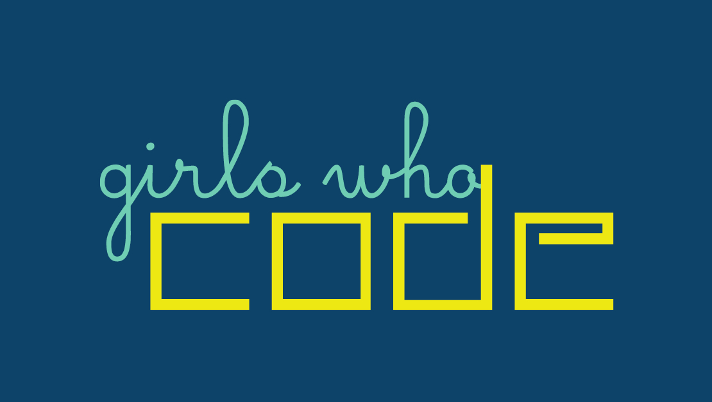

Home
Opportunities
Resources
Showing Opportunities by State
Girls Who Code

Girls Who Code is a nonprofit organization which aims to support and increase the number of women in computer science. The organization is working to close the gender employment difference in technology and change the image of what a programmer looks like
Transportation You
Transportation YOU is a hands-on, interactive, mentoring program that offers young women ages 13-18 an introduction to a wide variety of transportation careers. ... All participants are required to register for the Transportation YOU program and each event for an accurate headcount.
iCamp Academy
iCamp is a free media academy held at West Chester University from July 7-13 2019. We invite high school juniors and rising seniors from the Philadelphia School District to join us in making media that matters. We produce films, games, podcasts & audio, and web sites, but our passion is working with youth to effect social change.
Materials Science & Engineering Summer Institute
The Drexel University Materials Science & Engineering Summer Institute will give aspiring scientists and engineers the chance to learn about how atomic elements arrange themselves to form the materials that are all around us. Furthermore, the Summer Institute will emphasize how variables in processing of materials determine physical, mechanical, electrical and thermal properties. Through hands-on science and engineering activities, students will gain an understanding of how materials impact the fields of energy, biotechnology, electronics, and 3D-printing of composites.
Girls on Fire (Steam Event)
The Girls on Fire Art & Writing Workshop is co-organized by Peggy Savage. This summer's series is a S.T.E.M workshop for 7th to 12th female students. Each workshop series focus is a topic related to coding, digital art, engineering, and Science
Girls Who Code
Girls Who Code is a nonprofit organization which aims to support and increase the number of women in computer science. The organization is working to close the gender employment difference in technology and change the image of what a programmer looks like
Girls Who Code
Girls Who Code is a nonprofit organization which aims to support and increase the number of women in computer science. The organization is working to close the gender employment difference in technology and change the image of what a programmer looks like